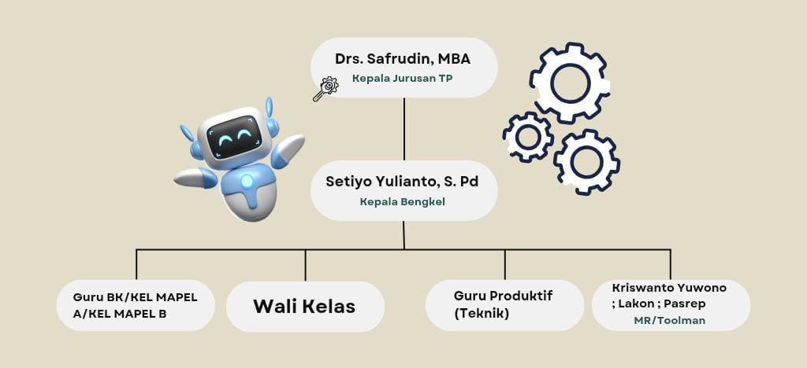

Profil Jurusan Teknik Pemesinan
Selamat datang di profil! Di halaman ini, kami akan memaparkan tentang struktur organisasi, baik dari susunan jabatan guru, dan kelengkapan lainnya yang menyangkut tentang Teknik Pemesinan. Selamat menjelajah yaaa!
Tentang Kami
Kompetensi keahlian Teknik Pemesinan SMK Negeri 2 Yogyakarta didukung oleh 12 orang staf pengajar (guru) dan 4 orang Teknisi atau Toolman. Dari jumlah staf pegajar (guru) tersebut : 3 orang guru lulusan program S2 (Master), 9 orang guru lulusan S1 (Sarjana). Tenaga pengajar pada Kompetensi Keahlian Teknik Pemesinan memiliki beberapa keahlian dalam bidang Teknik Pemesinan antara lain : Pemesinan Bubut, Pemesinan Frais, Pemesinan CNC, Pemesinan Gerinda, Computer Aided Drawing and Design (CADD) dan lain sebagainya. (Selengkapnya...)
Struktur Organisasi Jurusan Teknik Pemesinan

Fasilitas
Jurusan Teknik Pemesinan SMK Negeri 2 Yogyakarta dilengkapi dengan Fasilitas pendukung utama yaitu :
Fasilitas Laboratorium Teknik Pemesinan :
- Ruang Praktik Bubut dan Frais (Ruang E-101)
- Ruang Praktik Kerja Bangku dan Las (Ruang E-201)
- Ruang Praktik Gerinda (Ruang D-107)
- Ruang Praktik CNC Turning dan CNC Milling (Ruang D.105)
- Ruang Praktik Teknik Gambar Manufaktur/CADD (Ruang A.134)
- Ruang Praktik Simulasi Digital/Komputer (Ruang A.133)
Fasilitas Peralatan yang Dimiliki :
- 17 unit Mesin Bubut Konvensional
- 1 unit Mesin Bubut CNC (CNC Turning)
- 6 unit Mesin Frais Konvensional
- 1 unit Mesin Frais CNC (CNC Milling)
- 1 unit Mesin Gerinda Datar
- 1 unit Mesin Gerinda Silinder
- 2 unit Mesin Gerinda Alat
- 1 unit Mesin Pemotong
- 1 unit Mesin Roll
- 1 unit Alat Penekuk Plat
- 2 unit Mesin Las/Inverter 160 A
- 1 unit Mesin Las/Inverter 120 A
- 2 unit AC Stick Welding 250A
- 1 unit Mesin las SMAW – DC 250A
- 1 unit Mesin las GMAW (MAG) 350 A
Itulah beberapa Fasilitas yang dimiliki oleh Jurusan Teknik Pemesinan SMKN 2 Yogyakarta.
🔴 Memuat berita terbaru...